01首款触控 MacBook Pro 发布，22999 元起
北京时间 10 月 29 日凌晨，苹果在洛杉矶办完「Pro and Tell」，发布了首款支持触控的 MacBook Pro。
乔布斯 2010 年说过，触控笔记本在人体工学上糟透了。后来还有一句更狠的，人类的手臂不是雨刷器。这话说完十六年，苹果自己把那台机器做出来了。
但看完参数，这次转弯的分量，得重新估。
14 英寸国行 22999 元起，16 英寸 27999 元起。芯片沿用的是 M5 Pro 与 M5 Max，与现售的非触控版同款。
也就是说，这台卖两万三起的机器，苹果没有宣称它在 CPU 或 GPU 上比非触控版更快。有外媒专门点出了这一点。
- 苹果 10 月 29 日凌晨发布首款触控 MacBook Pro，官方名称为「MacBook Pro（PROLED XDR 显示屏）」。
- 屏幕是双层串联 OLED，10 至 120Hz 自适应刷新，HDR 峰值 2000 尼特，对比度 1000 万比 1。
- 触控传感器嵌在面板内部，不是贴在表层。
- 芯片沿用 M5 Pro 与 M5 Max，苹果未宣称性能提升。
- 国行 14 英寸 22999 元起，10 月 30 日上午 9 点预购，11 月 6 日发售。
一块苹果自己命名的屏
这次最值得看的不是触控，是屏。
苹果没管它叫 OLED，起了个名字叫 PROLED XDR 显示屏。本质是双层串联 OLED，两颗发光层叠在一起，为的是在提高亮度的同时压住老化。
参数是这样的。10 到 120Hz 自适应刷新，全屏持续亮度 1000 尼特，HDR 与户外 SDR 峰值都能到 2000 尼特，对比度 1000 万比 1，覆盖 P3 与 Adobe RGB。尺寸因边框收窄略有增加，14 英寸实际是 14.2 英寸，16 英寸是 16.3 英寸。
在笔记本这块屏上，苹果这次给的是它目前能给的全部。
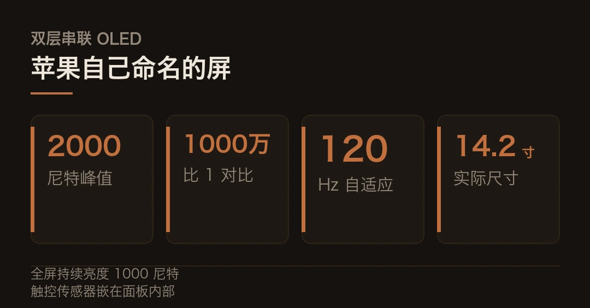
代价也在价格里。14 英寸国行 22999 元起，16 英寸 27999 元起。美国那边 2899 与 3399 美元，比同规格的非触控版贵 400 美元。
顶配更直观。16 英寸 M5 Max 拉满，选 128GB 内存、16TB 固态、纳米纹理玻璃，价格到 112624 元。其中 16TB 固态一项就 52500 元。
七档配置，价格怎么排
彭博此前传的 2899 美元，发布会后证实了。国行的七档配置是这样。
| 尺寸 | 芯片 | 内存与存储 | 国行价 ||---|---|---|---|| 14 英寸 | M5 Pro，15 核 CPU、16 核 GPU | 24GB / 1TB | 22999 元 || 14 英寸 | M5 Pro，18 核 CPU、20 核 GPU | 24GB / 1TB | 25499 元 || 14 英寸 | M5 Max，18 核 CPU、32 核 GPU | 36GB / 2TB | 36999 元 || 14 英寸 | M5 Max，18 核 CPU、40 核 GPU | 48GB / 2TB | 41999 元 || 16 英寸 | M5 Pro，18 核 CPU、20 核 GPU | 24GB / 1TB | 27999 元 || 16 英寸 | M5 Max，18 核 CPU、32 核 GPU | 36GB / 2TB | 38999 元 || 16 英寸 | M5 Max，18 核 CPU、40 核 GPU | 48GB / 2TB | 43999 元 |
看这张表会发现一个梯度。同样的 M5 Pro，14 英寸到 16 英寸加 2500 元；同样的尺寸从 M5 Pro 跨到 M5 Max，价格直接跳一万一到一万一以上。
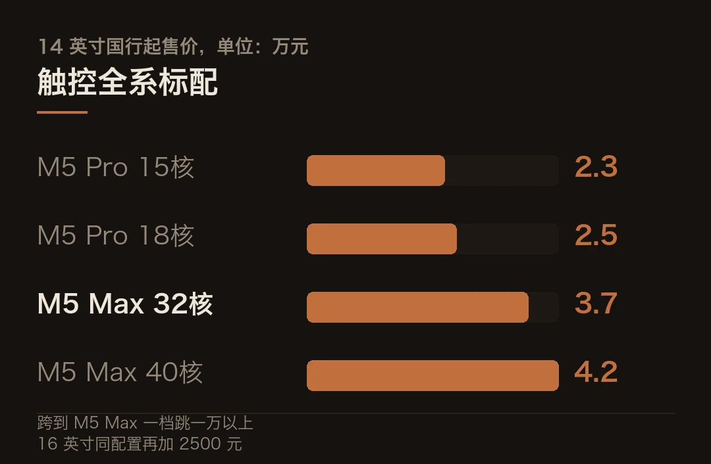
也就是说，这代产品真正区分档位的并非那块触控屏，而是芯片。触控全系标配，不做选配。这一点跟苹果过去给 Pro 机型做分级的方式不同，过去它常把新功能放在最高配试探市场。
这次反过来。触控成了门槛，芯片成了天花板。
触控是嵌进去的，不是贴上去的
很多触控本的做法是在屏幕表面加一层触控膜，本质是「外挂」。代价是厚度、透光率和响应延迟。
苹果这次把触控传感器直接做进了面板内部。官方描述是，操作反馈「就像直接在触控内容本身」上进行。
这个差别在参数表上看不出来。麻烦在于，它决定了这台机器到底能不能用。外挂方案的手指和内容之间隔着一层玻璃，点击总有一点飘。嵌入方案把这层距离消掉了。
支持的交互也列得具体。滚动、双指缩放、绘画、拖放、双击窗口填满屏幕、把窗口甩到边缘贴靠。
软件侧还在补。据报道，微软 365、Notion、Canva、Zoom、Lightroom、DaVinci Resolve 等应用的触控适配会在年内更新，Creator Studio 的更新在 11 月。
那些为触控改的细节
一台笔记本从「不能摸」变成「能摸」，要改的东西比想象的多。
铰链重新设计过，为了触控时屏幕不晃。视频通话时用手指点屏幕，摄像头画面会做实时防抖补偿，否则对方看到的就是一片抖动。散热架构也调整了，避免触控时屏幕表面烫手。
这几处都不在宣传页的显眼位置，但它们才是「能不能用」和「能不能忍」的分界。
外观上还有两处变化。
刘海没了，换成和 iPhone 一致的灵动岛，用来显示聚焦搜索、实时活动、隔空投送请求。A 面的苹果 Logo 重新会发光，这是 2015 年之后取消的设计，隔了十年回来。因为 OLED 不依赖统一背光，新 Logo 配了独立光源。
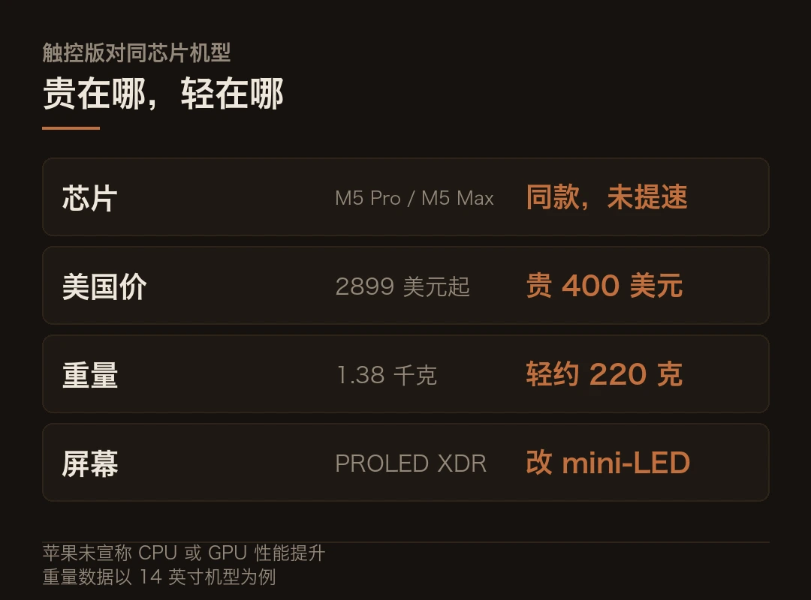
机身也轻了。14 英寸 1.38 千克，比同芯片的 mini-LED 版轻约 220 克；16 英寸 1.82 千克，轻约 320 克。厚度减了 0.5 到 1 毫米。
为什么芯片不换
这是全篇最该停一下的地方。
一台起售价两万三、顶配十一万的机器，用的还是 M5 Pro 和 M5 Max。这两颗芯片在现售的非触控 MacBook Pro 上已经跑了大半年。
苹果没有宣称任何 CPU 或 GPU 的性能提升。
等一下，按常规逻辑，新形态的旗舰不该配新芯片吗？苹果上一周刚发 M6，iMac 和入门款 MacBook Pro 都换上了。偏偏最贵这台没换。
三种解释都说得通。注意一点，它们指向同一个结论。
一是这代产品的重点就是屏和触控，芯片不是变量，硬上 M6 反而会让成本失控。二是 M6 目前的规格只覆盖到入门线，M6 Pro 和 M6 Max 还没出来。三是首批量小，用成熟芯片能保证良率。
不管哪种，结论一样。这台机器卖的不是算力，是那块屏和那层触控。
对买它的人，这个结论其实不坏。它意味着你花的钱全部落在显示和交互上，没有被摊到用不上的性能提升里。但也意味着，如果你要的是算力，它给不了你新东西。
触控被定义成「补充」
还有一个定性值得注意，它决定了这台机器未来会不会长成另一种东西。
苹果现任 CEO 约翰·特努斯明确说过，Mac 的核心定位仍是以键盘和触控板为主的间接输入设备，触屏只作为特定场景下的便捷补充。
这句话不是客套。它划了一条线，说明苹果不打算让 Mac 和 iPad 融合，只打算给 Mac 加一层可选交互。
补充和替代，是两种完全不同的产品命运。
如果触控是替代，Mac 迟早要重做界面逻辑，iPad 的存在理由会被压缩。如果触控是补充，那它就是给专业用户的一个便利层，Mac 还是 Mac。
苹果选了后者。这也是为什么它敢在坚持十六年之后掉头，因为掉的只是「要不要支持」，不是「Mac 是什么」。
它和 iPad Pro 撞了一下
还有一件事苹果没在会上讲。
顶配 13 英寸 iPad Pro 加妙控键盘，价格在三万上下。而这台 14 英寸触控 MacBook Pro 是 22999 元起。一台能触控的 Mac，价格压在了「iPad Pro 加键盘」之下。
过去这两条线泾渭分明。iPad 有触控没桌面软件，Mac 有桌面软件没触控，用户只能按需求二选一。现在这条界线在硬件层面被抹掉了一半。
苹果的解法是软件。iPadOS 和 macOS 还是两套系统，一台机器不会同时是两者。所以严格说，Mac 有了触控，但没有变成能跑 iPad 应用的设备。
这就留下一个问题。如果我要的是「能摸的屏幕 + 桌面软件」，现在有答案了。如果我要的是「能摸的屏幕 + 轻办公」，iPad Pro 还便宜一半。
所以撞得不重，但撞上了。真正的压力会出现在两年后，等触控下放到 MacBook Air 那一档，价格差拉平的时候。
苹果显然算过这笔账。它选择让触控从最贵的机型起步，先在利润最厚的地方试水，避免一上来就把 iPad 的价格体系冲乱。这是很典型的苹果节奏。
十六年前那句话
回到乔布斯。
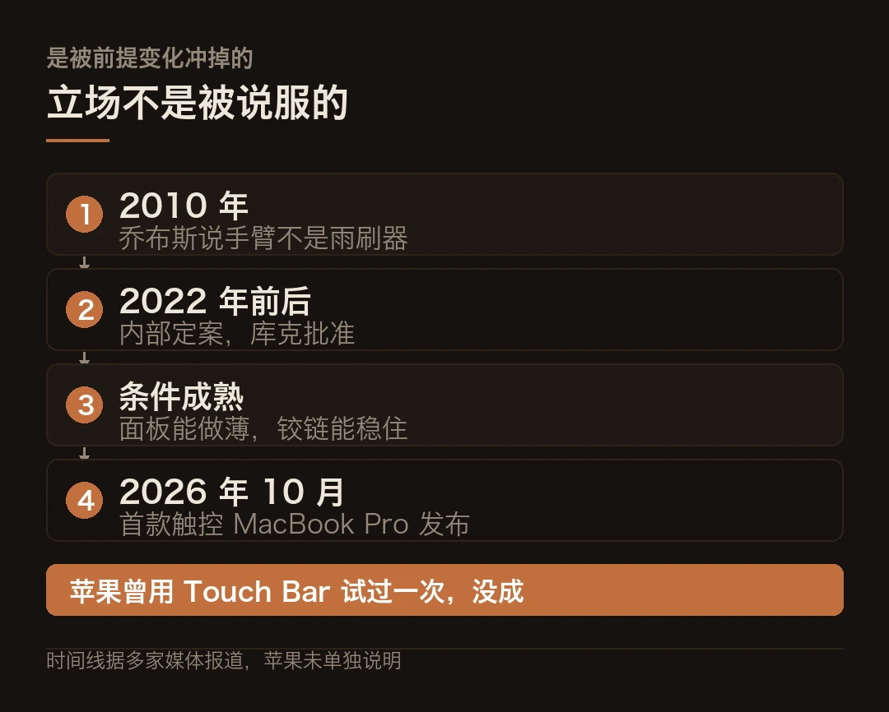
2010 年他说，触控屏不适合垂直摆放的电脑，人类手臂不是雨刷器。这个判断在当时是对的。那会儿的触控本要么屏幕晃得没法点，要么系统根本没为手指设计，用起来确实遭罪。
十六年过去，三件事变了。屏幕能做薄做轻还能嵌进触控层；铰链能稳住；系统能按输入方式动态调整控件。
也就是说，当年那个判断没错，只是它依赖的前提被技术推翻了。
据多家媒体报道，这个决定大约四年前就定了，由时任 CEO 库克批准，部分原因是触控成了顾客最常提的功能诉求之一。这是特努斯接任后主导的第三场发布。
一个坚持了十六年的立场，最后并非被说服，它被条件成熟冲掉了。这在硬件行业里很常见，只是苹果的立场一向更响，掉头时声音也更大。
判断
这台机器的意义，得分成两层看。
对苹果，它补上了产品线最后一个明显的缺口。Windows 阵营的高端轻薄本把触控当标配做了十年，这一项苹果一直被当短板提。现在短板没了。
对行业，它没有改变任何东西。触控笔记本不是新品类，2012 年就有。苹果做的是「把它做得符合自己的标准」，不是「发明它」。
所以我不觉得这是一次激进的产品转向。它更像一次迟到很久的补齐。而补齐的代价，是首代产品的性价比不会好看。
真正该看的是两件事。一是首年返修率，屏幕加触控层是新的失效点，折叠屏上周刚出过事。二是明年 M6 Pro 上来之后，这台机器的价格能不能下来。
如果两件都往好的方向走，2027 年之后触控会从「顶配专属」变成「Mac 标配」。到那时候再回头看这一台，它就是个开头。
「苹果未宣称 CPU 或 GPU 性能提升」系依据官方规格页与发布信息不含相关对比数据，外媒亦有同样观察。顶配价格按国行选配累加，具体以官网配置器为准。本文仅作事实转述，不构成任何购买建议。
本文信息来源
- Apple 中国官网 — MacBook Pro 产品页与技术规格（2026-10-29） · apple.com.cn
- Apple Newsroom — Apple gives iPad mini its biggest update ever（2026-10-26） · apple.com.cn
- 澎湃新闻 — 苹果凌晨发布首款触控屏 MacBook Pro，22999 元起售（2026-10-29） · thepaper.cn
- 腾讯新闻（TechWeb）— 16 年后，MacBook Pro 终于能「上手」了（2026-10-29） · news.qq.com
- 腾讯新闻 — 苹果发布首款触屏 MacBook Pro，22999 元起，OLED 触控时代开启（2026-10-29） · news.qq.com
- 南方+ — 苹果发布首款触屏笔记本，顶配突破 11 万元（2026-10-29） · nfnews.com
- Free Press Journal — Apple Unveils Touchscreen MacBook Pro With M5 Pro, M5 Max Chips（2026-10-29） · freepressjournal.in
- MacRumors — Apple Expected to Announce MacBook Pro With Touchscreen（2026-10-27） · macrumors.com
- IT 之家 — IT 早报：苹果为 14 英寸 MacBook Pro 推出 M6 芯片版本（2026-10-28） · 163.com
- 环球网 — 苹果密集更新硬件产品线，新款 iMac 与 14 英寸 MacBook Pro 搭载 M6 芯片（2026-10-28） · 163.com
02MiniMax 开源 15 个工程 skill
10 月 28 日，MiniMax 在 GitHub 放了一个仓库，叫 mcode-stack。
据仓库说明，里面是 15 个 skill 加若干 checklist，全是他们做 MiniMax Code 时每天在用的工程流程。MIT 许可，其中 6 个改编自 Google 的工程实践文档（CC-BY 3.0）。
仓库创建于 10 月 28 日凌晨，当天只有 1 个 star、3 次提交。这是早期快照，不是成熟项目的结论。
这批文件里最反直觉的一个，是 `subagent-split-check`。它开头第一句是：subagent 是管理上下文的工具，不是划分地盘的工具。
一个开源了 skill 的团队，写了一个 skill 劝你别乱拆 subagent。
- MiniMax 10 月 28 日开源 mcode-stack，15 个 skill 加 checklist，MIT 许可。
- 6 个 skill 改编自 Google 工程实践文档，遵循 CC-BY 3.0。
- 覆盖五组：规划拆分、上下文与工具、长会话与长命令、代码审查、实验与救火。
- 最反直觉的 subagent-split-check 主张默认单主循环，拆之前要满足三个硬条件。
- 用通用 SKILL.md 格式，可装进 .minimax/skills、.claude/skills、.agents/skills、~/.codex/skills。
这十五个文件管的是哪几段
按仓库自己的分组，五组对应一天里的五个时刻。
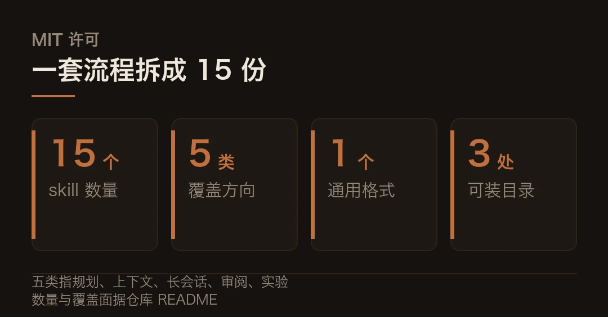
| 组 | 代表 skill | 管什么 ||---|---|---|| 规划与拆分 | subagent-split-check、engineering-small-prs | 活该谁干，改动怎么切小 || 上下文与工具 | tool-budget-audit、context-tax-audit | 每个工具吃多少上下文 || 长会话与长命令 | long-session-check、long-command-check | 会话快满了怎么办，命令要不要等 || 代码审查 | independent-review、engineering-code-review | 谁来审、按什么审 || 实验与救火 | harness-experiment、engineering-emergency-changes | 小规模评测、hotfix 真紧急吗 |
有一条要更正流传的说法。`mcode plugin add` 只从官方目录装，不接受 GitHub URL 或本地路径。想装整个 stack，得手动把目录拷进本地插件目录。
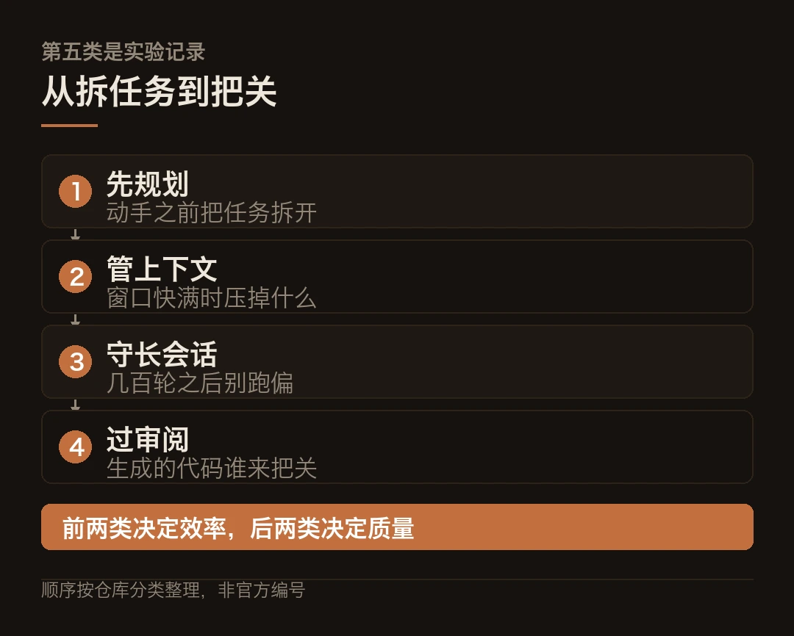
那个劝你别用 subagent 的 skill
它的默认立场很干脆：一个主循环，skill 按需加载。
想拆 subagent？先满足三个硬条件之一。
一是可测量的性能劣化。注意「可测量」三个字，指的是评测结果，不是「感觉上下文太长」。
二是工作并行且用完即弃。比如几条互不依赖的研究线，每条都需要干净的上下文。
三是工具或指令冲突，主 agent 反复选错工具，这时候拆开才合理。
它还给了个判断标准，比上面三条更好用。这一步你后面需要的是原始中间输出，还是只要结论？
只要结论的活，才配进 subagent。需要过程材料的活留在主线，因为它后面还要被反复引用。
这条标准把「拆不拆」从一个架构问题，变成了一个信息流问题。
长命令那一条，藏着一笔钱
`long-command-check` 是给做 agent 的人写的，问题很具体：agent 跑一条 shell 命令，要不要等它跑完。
这里有个隐藏成本。前台命令执行期间，没有任何新请求发给模型。如果等待时间超过了服务商的提示词缓存有效期，下一次请求就要重新处理整个前缀。
又慢，又贵。
它的十项审计里有四条比较关键。前台等待上限是多少，有没有卡在缓存有效期以内；命令转后台时必须是同一个进程继续跑，不能杀掉重来；读输出不能重置超时计时器；输出太大要截断或落盘增量读取，不完整的输出必须标注。
还配了四个行为测试，比如「起一个 dev server 然后去干别的」。
这类东西看着琐碎，但它把「agent 为什么又慢又贵」拆成了十条可以逐项打勾的问题。
装法有三条，别装全套
单装一个 skill，三行命令。
```bash
# 拉仓库git clone https://github.com/MiniMax-AI/mcode-stack.git ~/mcode-stack
# 挑一个 skill 放进 agent 会扫的目录mkdir -p ~/.agents/skillscp -R ~/mcode-stack/stacks/ronny/skills/long-command-check ~/.agents/skills/
# 新开会话，输入 /skills 确认加载
# 运行：/long-command-check```
四个目录都认：项目内的 `.minimax/skills/`、`.claude/skills/`、`.agents/skills/`，以及全局的 `~/.agents/skills/`（`~/.claude/skills/` 和 `~/.codex/skills/` 也会读）。
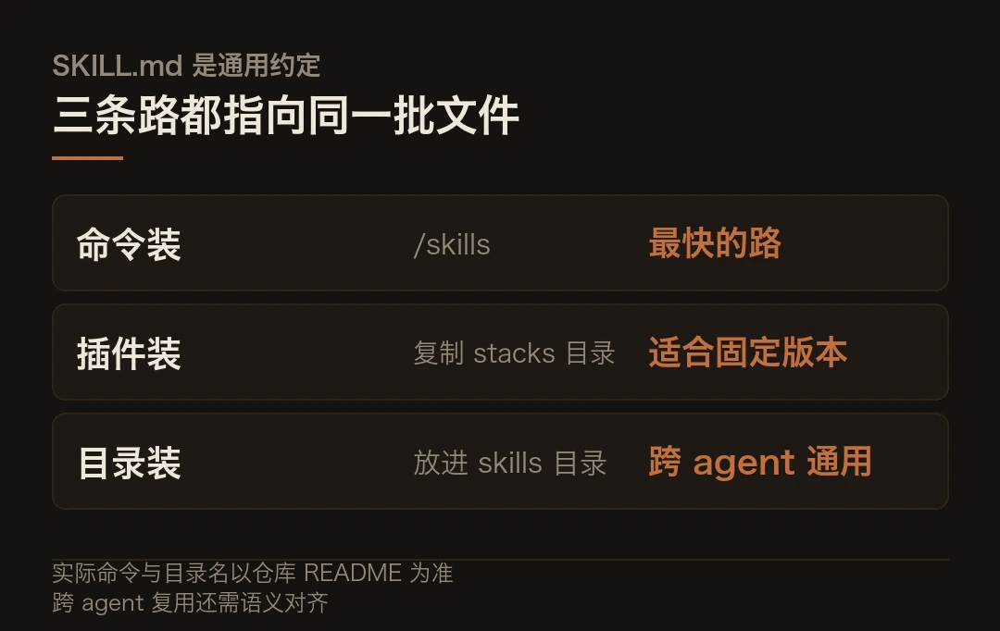
装全套是另一条路，作插件：把 `stacks/ronny` 整个目录拷进本地插件目录，然后在 `/plugins` 里刷新启用。
但我不建议全装。
先装三个就够，规划、上下文、代码审查。这三块是通用痛点，跟具体项目无关，装上就能用。
长会话那个看任务长度；实验那个依赖团队有记录习惯，一个人用会变成负担。
15 个全装最直接的后果，是每次请求都多背一份文档。
它的两个硬伤
得说清，不然这段就成了推荐。
第一，它太新。仓库创建当天只有 1 个 star、3 次提交、没有 fork。README 里引的四篇工程笔记，有两篇还标着「即将发布」。目前只有研发负责人 Ronny 的 stack 是完整的，其他成员的还在路上。
第二，审计结论的质量取决于你用的模型。这些 skill 干的事是让 agent 读你的代码，回答一张编号清单，给出证据和判定。清单本身是硬的，但证据找得准不准，取决于模型。看到「通过」两个字，还是得自己扫一眼证据列。
同一周还有两个自托管的项目。HitKeep，MIT，Go 单二进制，内嵌 DuckDB 和 NSQ，做无 cookie 的访问分析。还有 HeyPuter 的 everything，MIT，4,580 星，用一个 JS 单仓重建开源版的 Office、Photoshop、Slack、AutoCAD，每个 app 都带在线 demo。
三个项目的共同点不在技术。它们都把「内部怎么干活」变成了可下载的文件。
我打算怎么试
光看 README 判断不了一套工程流程，这话得说在前面。我还没装上跑过。
第一步，先不装进正式工作流，在一个临时项目里跑规划类那个 skill，看它给出的任务拆解是不是比我自己列的细。这一步验证「有没有用」。
第二步，拿一个有历史包袱的仓库跑代码审查那个，看它能不能揪出我平时漏掉的类型。这一步验证「有没有增量」。
第三步，把上下文那个装进长任务，跑到窗口快满，看它压缩时丢了什么。丢什么比留什么更重要。
第四步，同一份 SKILL.md 放进 `.claude/skills/` 再跑一遍，对比结果差多少。
四步跑完大概三天。出结果我再写一篇。
仓库的 skill 数量、分组与「团队日常在用」的说法均为其 README 自述，尚无独立评估；创建当天仅 1 star、3 次提交，属早期项目。安装命令与目录名以仓库 README 为准，本文代码块中的路径为示意。文中「我打算怎么试」为计划，尚未执行。本文仅作事实转述，不构成任何工具选型建议。
本文信息来源
- GitHub — MiniMax-AI/mcode-stack（2026-10-28） · github.com
- GitHub — google/eng-practices, Google's Engineering Practices documentation（2026-10-28） · google.github.io
- onlylabs — MiniMax Repo: MiniMax-AI/mcode-stack, repository metadata snapshot（2026-10-28） · onlylabs.fyi
- explainX — MiniMax mcode-stack: 15 Agent Skills You Can Install（2026-10-28） · explainx.ai
- AIGC.NEWS — MiniMax open-sources mcode-stack, the workflows and skills used to build MiniMax Code（2026-10-28） · aigc.news
- 猿兄 — MiniMax 开源了自家 AI 编程工作流，15 个 Agent Skills（2026-10-28） · mp.weixin.qq.com
- zendot.org — HitKeep: Self-Hosted, Open Source Web Analytics in One Go Binary（2026-10-27） · zendot.org
- zendot.org — everything: The World's Software, Rebuilt as Open Source（2026-10-27） · zendot.org
- GitHub.Locker — Personal AI assistant projects, as of October 28, 2026（2026-10-28） · github.locker
03清华把钟做进原子核，剑桥看见锂的雪崩
同一周，《自然》上出了两项结果，方向完全不相干，但做的是同一件事：把原来测不准的东西测准。
一项把计时基准从原子外层的电子，推进到原子核内部。另一项把镜头从一堆颗粒的平均值，挪到单个颗粒的内部。
两项都刷新了「看不见」的边界。
一个必须自己造激光的项目
先说核光钟。
原子钟靠原子最外层电子的能级跃迁计时，技术成熟，但精度有天花板，大约几百万年差一秒。换成光学信号可以做原子光钟，精度提到几千亿年差一秒，可电子在最外层，极容易被温度、磁场、震动干扰，所以至今困在实验室。
核光钟换了个思路，用原子核的能级跃迁当节拍器。原子核在原子中心，尺度小、质量大，外界扰动影响小得多。
难点在选核素。人类已知的原子核二十余万种，绝大多数激发态跃迁能量在万电子伏以上，要触发它就得上波长小于 0.1 纳米的激光，人类还造不出来。
钍-229 是唯一的例外。它所需能量约 8.4 电子伏，对应波长 148 纳米，属于真空紫外。
问题又来了。148 纳米在空气里会被强烈吸收，必须在真空中传播；而且钟要的是连续波，不是脉冲。多年来国际上没人做出 148 纳米连续波真空紫外激光。
清华大学物理系副教授丁世谦团队 2022 年提出方案，今年 2 月首次做出来，成果也发在《自然》。这一步通了，核光钟才可能。
一个钟能不能做出来，先取决于有没有人能造出那台激光。
1.4 微克，没有试错空间
钍-229 半衰期不长，地球上没有天然矿藏，只能靠核反应堆少量生产。据清华大学披露，我国相关核素获取渠道受国外严格限制，整个项目里团队可支配的钍-229 只有 1.4 微克。
比一粒细尘还轻。
要做钟，得把这 1.4 微克掺进氟化钙晶体，让晶体里布满钍-229 原子核。原料太少，意味着一次失败就没有第二次。
最终团队联合中科院上海光学精密机械研究所、上海硅酸盐研究所、上海应用物理研究所，一次性生长出毫米级的高质量掺钍氟化钙晶体。单次生长所用核素仅为欧洲团队的约 1/200。
这一条比「做出来了」更有信息量。别只看结果，看它在什么约束下做出来的。它说明在原料受限的条件下，工艺必须一次到位。
接下来是读信号。148 纳米激光打上去，频率与跃迁频率吻合时原子核会吸收部分光子，光谱随之变化，但这个吸收信号只有万分之一量级。团队为此开发了快速核跃迁频率读取技术，把极弱信号从噪声里提出来。
同期，欧洲团队用高浓度钍晶体加光管吸收读出，也实现了稳定闭环。两条路线都成了。
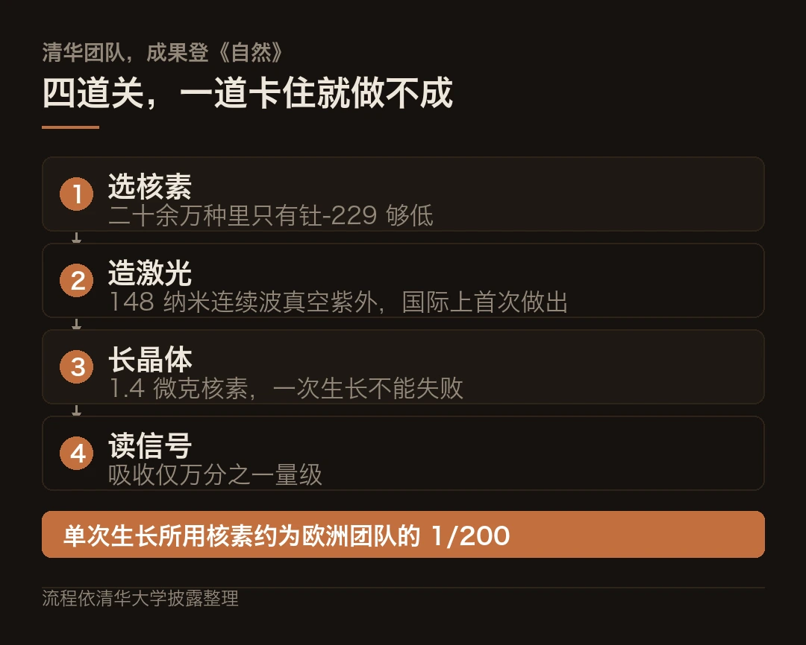
但先别急着说超越原子钟
美国国家标准技术研究院今年 8 月的评估给了一个冷静的数字。两支团队的原型单日频率漂移对应约三百万年偏差一秒。
而目前最顶尖的传统原子钟，是四百亿年误差不超过一秒。
也就是说，核光钟还没有赢。注意一点，它证明的是原理可行，不是精度领先。它证明的是原理可行、闭环可跑，不是精度已经领先。下一步要攻的是真空紫外激光效率、晶体材料、系统小型化和环境适应性。
维也纳工业大学的舒姆说，这个领域不久前还是「平静的小众领域」，现在有了「激烈但友好的全球竞争」。魏茨曼科学研究所的佩雷斯评价更细，说核光钟已经从「有潜力的系统」变成「一台可用的精密仪器」。
另一边，锂不是慢慢渗进去的
第二项结果在电池领域，做法是把镜头对准单个颗粒。
石墨是锂离子电池最主流的负极。锂嵌进去时会经历一系列阶转变，从稀相阶段 1'L 开始，依次 4L、3L、2L、2、1。问题卡在稀相阶段。
这个阶段锂含量低，x 最高约 0.25。过去的文献在这里打了很多年架：一派说它是连续固溶体，锂浓度平滑上升；另一派说它是双相转变，两相共存、界面推进。
两种描述在数学上都能拟合一部分数据，谁也没法否掉谁。因为没人真的看见过。
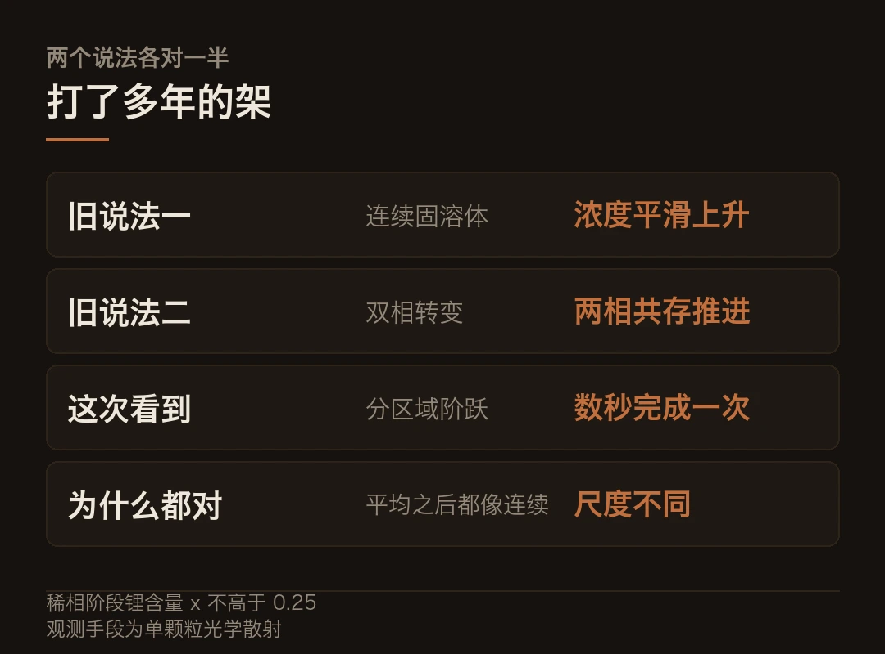
看不清楚有四个原因叠在一起。锂原子量低信号弱；扩散快到来不及跟；容易形成亚稳相；颗粒之间异质性大，一堆颗粒平均下来什么都看不出来。再加上石墨对电子束敏感，电镜这条路也不好走。
平均，是这件事最大的敌人。
剑桥大学 Clare Grey 与 Akshay Rao 团队换了一条路，叫电荷光度学。在单个石墨颗粒上做操作态光学散射显微，配光学可及式纽扣半电池，2 Hz 采样、每帧积分 8 毫秒。
原理不复杂。锂嵌进去，电子载流子密度上升，等离子体频率蓝移，金属反射增强，光学散射强度随之变化。追踪不同区域的强度阶跃，就能反推锂的位置和数量。
它不测锂，测的是锂带来的光学后果。低信号的问题就这样绕开了。
雪崩式阶跃，和一场打了几十年的架
看到的是这样。
稀相阶段里，石墨颗粒的嵌锂和脱锂由一系列间歇性、局部化的阶跃事件组成。微米级的区域在数秒内完成，然后停住，等下一次。这些阶跃在脱锂和嵌锂时都有，在不同类型石墨里都有，15 到 45 摄氏度之间都有。
每一个阶跃往往归属于颗粒中某个特定局部区域的重复事件。它有结构，并非随机噪声。同一块地方会反复地跳。
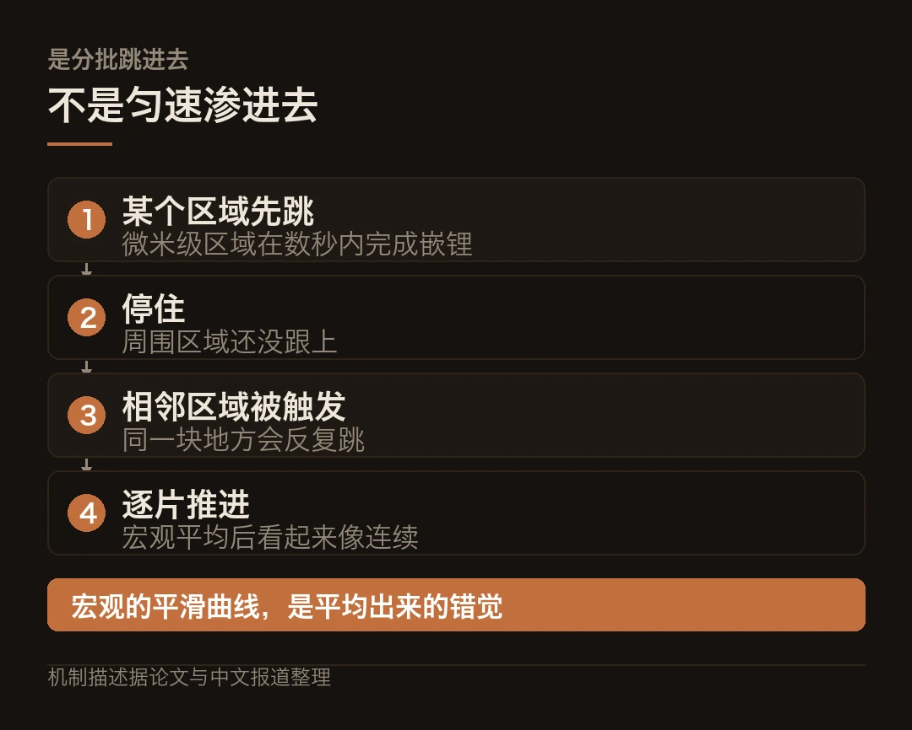
这一下把那场架解释了一半。为什么宏观上看到连续、微观上看到双相？因为在有缺陷、有异质性的晶格里，填充本来就是分区域、分批次推进的。宏观平均之后看起来连续，单颗粒看是阶跃的。
团队还建了各向异性随机场 Ising 模型，模拟无序晶格里的锂填充，定性再现了雪崩统计和那种「表观连续」。
同一期还有一条，7 电子伏的带隙
顺带记一条材料结果，同一周的《自然》。
康奈尔大学团队在氧化铝镓薄膜里掺硅，让带隙超过 7 电子伏时仍能导电，打破立方氮化硼保持的纪录。6 电子伏以上的区间，室温导电性比以往报道高出 1 亿倍以上，还做成了二极管和晶体管。
带隙越宽越能扛强电场，器件可以更小更耐压。难处在于铝一多就几乎注不进自由电子。办法是分子束外延，在蓝宝石衬底上逐原子层生长，掺少量硅补电子。
产业化前景落在衬底上。蓝宝石储量丰富、成本低、已经规模化生产，比金刚石和立方氮化硼好落地。
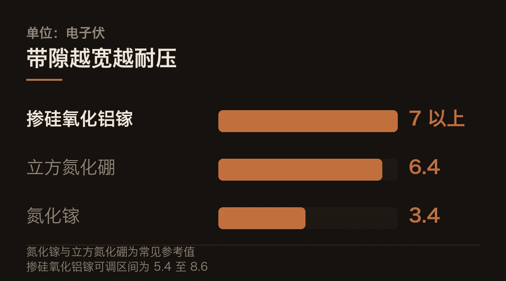
三条放在一起，共同点是同一件事：先把边界往外推一格，再谈应用。
冷判断
两项结果放在一起，共同点不在「都发了《自然》」。
共同点在于，两边都是先解决「怎么看见」，才谈得上结论。
核光钟那边，先得有人造出 148 纳米连续波激光，否则连实验都做不了。石墨那边，先得把测量尺度从「一堆颗粒」压到「一个颗粒」，否则永远只能得到平均曲线。
这也解释了为什么这两条都不该读成突破。核光钟还没赢过原子钟，石墨那篇也没做出更快的电池，它是观测加建模，没有器件。
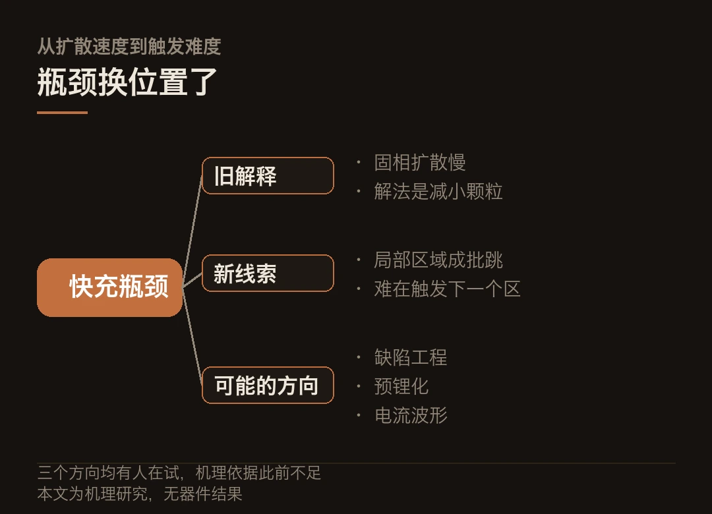
真正的价值在后面。核光钟如果能把「三百万年差一秒」推到「四百亿年差一秒」的量级，导航、通信、深空探测的基准都会换。石墨那边如果能推出可测的雪崩触发阈值，电池厂做配方筛选时就多了一个不用拆电池就能量的指标。
从「看得见」到「测得出」，再到「用得上」，中间隔着好几年。这两篇走完了第一步。
核光钟的精度对比引自美国国家标准技术研究院 2026 年 8 月官方技术评估。1.4 微克核素用量、1/200 生长用量等数字来自清华大学披露，属单方口径。
石墨研究的结论为论文作者自述，实验条件为单颗粒、光学可及式纽扣半电池，与量产电芯工况存在差异，不宜外推为快充性能结论。三项均为机理或观测研究，不含器件。本文仅作事实转述，不构成任何技术或投资建议。
本文信息来源
- 清华大学 — 凭借一粒「微尘」，他们把原子核做成了「钟摆」（2026-10-27） · tsinghua.edu.cn
- 科学网（中国科学报）— 用一粒「微尘」，把原子核做成「钟摆」（2026-10-27） · news.sciencenet.cn
- 劳动时报 — 全球量子精密测量技术竞速升温，核光钟成果同期登《自然》（2026-10-28） · paper.gzqgw.cn
- Nature — Avalanche-like intercalation and intraparticle correlations in graphite（2026-10） · nature.com
- 搜狐 — 颠覆传统认知，石墨嵌锂并非连续过程而是雪崩式阶跃（2026-10-28） · sohu.com
- OAE Publishing — Interface failure behaviors and performance enhancement strategies of graphite anodes for lithium-ion batteries（2026-10-27） · cname.oaepublish.com
- 中国科学院 — 掺硅氧化铝镓薄膜导电带隙刷新纪录（2026-10-28） · cas.cn
- 科学网 — 掺硅氧化铝镓薄膜导电带隙刷新纪录（2026-10-28） · news.sciencenet.cn
- 腾讯新闻（财联社）— 掺硅氧化铝镓薄膜导电带隙刷新纪录（2026-10-28） · news.qq.com
04英伟达 30 亿入股 Meta，HBM4 降层保良率
今天的速览，六条。科学部分在 03 那篇里讲完了，这里只剩算力账和终端。
海外 · 英伟达 30 亿美元入股 Meta
英伟达与 Meta 10 月 27 日发布联合公告，把合作从供货升级成持股。
据英伟达新闻稿，它将出资 30 亿美元认购 Meta 正在进行的股权发行；同时双方扩大在 Meta 个人智能体 Muse 及 Muse 系列模型上的合作。
按 Meta 每股 625 美元的定价算，这 30 亿美元对应约 480 万股，占此次普通股发行规模约 12%。
融资规模也在往上调。Meta 把普通股发行从 225 亿美元提到 250 亿美元，加上 125 亿美元的存托凭证，本轮合计 375 亿美元。再算上 2027 年计划通过市价发行筹的 600 亿美元，总盘子接近 975 亿美元。
这笔交易的性质不在卖货，在换股。 英伟达把客户关系变成股权绑定，Meta 用股权锁定后续 Rubin 机柜的供给。
基础设施那侧写得很具体。Meta 会扩大部署 Vera Rubin 和 Vera CPU，以及 Spectrum-X 以太网和 BlueField-4。双方还考虑在英伟达 OpenShell 参考架构上合作，包括用于安全部署的 OpenShell 和用于监控智能体行为的 Sentry。
黄仁勋在新闻稿里的说法是，AI 智能体代表新的计算范式，软件理解目标、推理、调用工具并替人完成工作。扎克伯格的说法是，Muse 是把个人超级智能带给每个人的方式。
补一个背景。Muse 今年 9 月初上线，10 天内登顶美国 App Store 免费榜，Meta 股价一度摸到 779.82 美元。这款产品此前内部叫 Hatch。
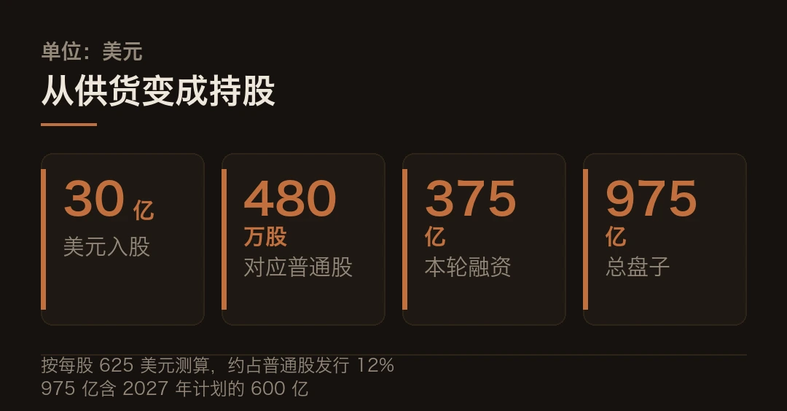
海外 · 8 层 HBM4 定档 2027 年二季度
据 DIGITIMES 援引 ZDNet Korea 报道，三星与 SK 海力士把目标定在 2027 年二季度，向英伟达批量出货 8 层堆叠的 HBM4。
推手是英伟达，这点有点反直觉。它要求 Rubin 架构用 8Hi 而不是 12 层，因为 12 层要键合更多 DRAM 晶圆，硅片物理高度增加，单颗成本上升、工厂良率下降。
先保良率、再冲规格，这是量产阶段的理性回归。
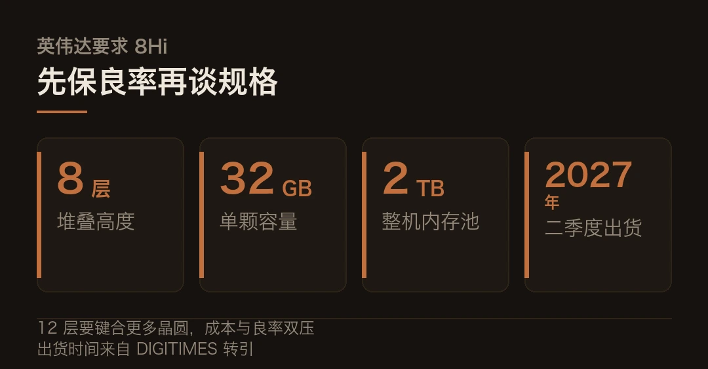
英伟达把 8 层同时用于标准版 Rubin 和 Rubin Ultra，HGX Vera Rubin NVL8 的内存池定为 2TB HBM4，由 8Hi、单颗 32GB 的堆叠在平台内分布实现。
海外 · 机器人吃掉的不是 HBM
马斯克在 X 上回帖说，机器人的 RAM 需求会超过「地球上所有其他一切」，理由是机器人要跑在物理载体上才能塑造原子。
Counterpoint Research 测算，到 2030 年人形机器人 DRAM 需求增长 20 倍，单台搭载内存从现在的约 19GB 翻到 39GB 以上。
分析师 Shay Boloor 据此推算，特斯拉若年产 1000 万台 Optimus、每台 72GB，对应约 720PB 需求。他特别指出，机器人用的是低功耗内存 LPDDR，不是 HBM。
注意一点，这个区分有意义。HBM 是高单价小体量，LPDDR 是低单价大体量。
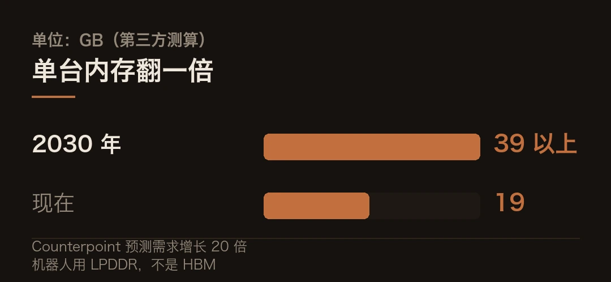
是两条不同的曲线。
为什么现在讲这个？因为 Optimus 节奏偏慢。特斯拉 Q3 财报会说首批交付瞄准明年底前后，Fremont 产线到 2 万台一周还需至少一年。
海外 · Genie 4，一句话生成可交互世界
谷歌 DeepMind 推出研究预览版世界模型 Genie 4，能生成可交互的虚拟世界，支持实时编辑场景，首次实现音视频同步生成，计划向 AI Ultra 订阅用户开放。
从生成视频到生成一个能走进去改的世界，跨得不小。麻烦在于，现在只是研究预览。
国内 · 小米 REDMI K100，一万毫安时电池
小米发布 REDMI K100：骁龙 8 至尊版，6.83 英寸 165Hz 直屏，10000mAh 金沙江电池，狂暴双芯加游戏独显 D2，澎湃 OS 4。限时特惠 2999 元起。
别只看屏幕，一万毫安时值得停一下。两年前这还是充电宝的档位。塞进手机，电芯和堆叠都得重做。
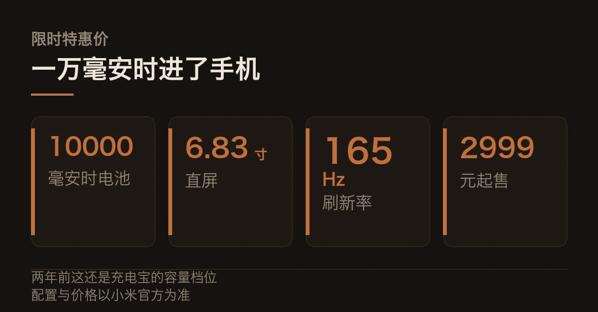
海外 · 静电这个两千年的谜，卡在一层脏东西上
最后一条不是新发现，但它解释了一个老现象：同样两块材料摩擦，为什么有时带正电、有时带负电。
一个团队用超声波把玻璃珠悬在空中，关掉声波让它自由落体撞靶板，反弹瞬间再接住。全程无接触。
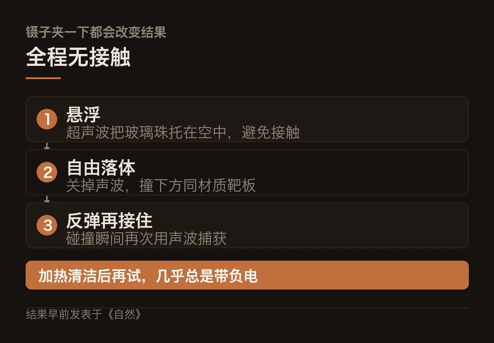
每颗珠子都有稳定的带电倾向，但彼此差异巨大。加热到 200 摄氏度清洁后再试，几乎总是带负电。
原因找到了。加热剥离了表面一层富碳分子薄膜，这层来自空气的分子级「污垢」，打破了电荷对称性。
两千年的谜，一部分答案在空气里。
HBM4 出货时间来自 DIGITIMES 转引，非厂商正式公告；机器人内存测算为 Counterpoint Research 与分析师观点，非特斯拉官方数据；Genie 4 为研究预览，以正式开放为准；REDMI K100 配置与价格以小米官方为准；静电研究来自《自然》早前论文。不构成任何投资建议。
本文信息来源
- NVIDIA Newsroom（GlobeNewswire）— NVIDIA and Meta to Expand Collaboration on Muse and Muse Family of Models Amid Robust Growth（2026-10-27） · morningstar.com
- Unite.AI — Meta Deepens NVIDIA Partnership on Muse AI Models and Infrastructure（2026-10-27） · unite.ai
- 智东西（经新浪财经）— 黄仁勋砸 200 亿，押注扎克伯格（2026-10-27） · finance.sina.com.cn
- 财联社（经网易）— 英伟达拟出资 30 亿美元认购 Meta 新股（2026-10-27） · dy.163.com
- 中华网 — 英伟达与 Meta 宣布将扩大合作，共推 AI 基础设施建设（2026-10-27） · news.china.com
- DIGITIMES — Samsung, SK Hynix eye 2Q27 shipments of 8-layer HBM4 to Nvidia（2026-10-27） · apps.digitimes.com
- Benzinga — Elon Musk Says Robots Will Need More Memory Than Everything Else on Earth（2026-10-27） · benzinga.com
- IT 之家 — IT 早报：谷歌推出最强世界模型 Genie 4（2026-10-28） · 163.com
- 小米官网 — REDMI K100 产品页（2026-10-28） · mi.com
- 河北省科学技术厅 — 一场持续两千年的静电之谜（2026-10-28） · kjt.hebei.gov.cn
本文首发于公众号「YITENG」。原文：daily.html
留言